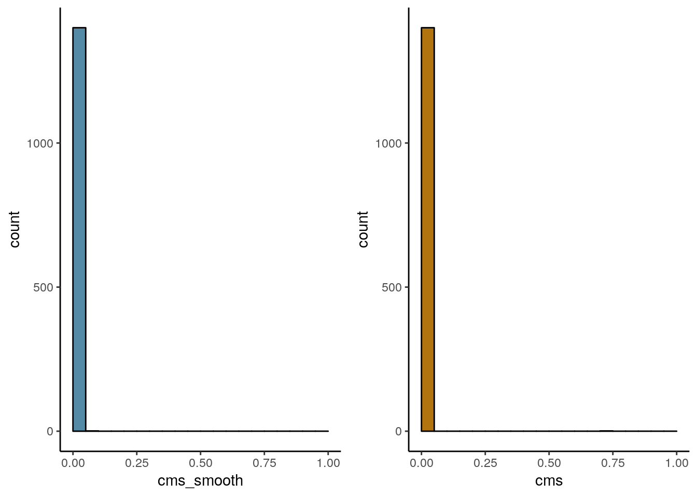
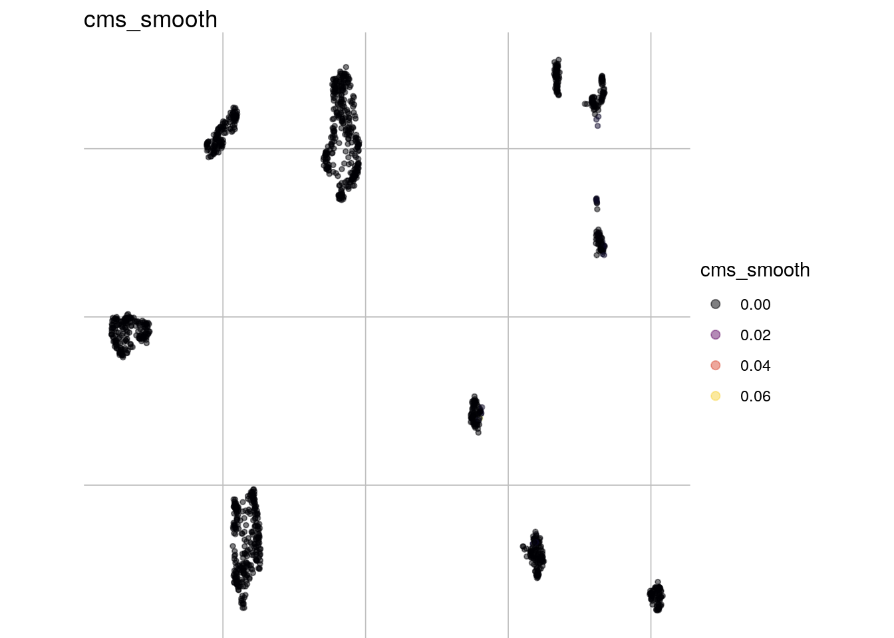

cellbench_seq_protocols
almutlue
2019-05-29
Last updated: 2019-05-31
Checks: 6 0
Knit directory: characterize_batches/
This reproducible R Markdown analysis was created with workflowr (version 1.3.0). The Checks tab describes the reproducibility checks that were applied when the results were created. The Past versions tab lists the development history.
Great! Since the R Markdown file has been committed to the Git repository, you know the exact version of the code that produced these results.
Great job! The global environment was empty. Objects defined in the global environment can affect the analysis in your R Markdown file in unknown ways. For reproduciblity it’s best to always run the code in an empty environment.
The command set.seed(20190528) was run prior to running the code in the R Markdown file. Setting a seed ensures that any results that rely on randomness, e.g. subsampling or permutations, are reproducible.
Great job! Recording the operating system, R version, and package versions is critical for reproducibility.
Nice! There were no cached chunks for this analysis, so you can be confident that you successfully produced the results during this run.
Great! You are using Git for version control. Tracking code development and connecting the code version to the results is critical for reproducibility. The version displayed above was the version of the Git repository at the time these results were generated.
Note that you need to be careful to ensure that all relevant files for the analysis have been committed to Git prior to generating the results (you can use wflow_publish or wflow_git_commit). workflowr only checks the R Markdown file, but you know if there are other scripts or data files that it depends on. Below is the status of the Git repository when the results were generated:
Ignored files:
Ignored: .Rhistory
Ignored: .Rproj.user/
Untracked files:
Untracked: data/pbmc_media.rds
Untracked: output/pbmc_media_cms.rds
Untracked: output/summary_pbmc_media_storage.rds
Untracked: output/vp_cellBench.rds
Untracked: output/vp_pbmc.rds
Note that any generated files, e.g. HTML, png, CSS, etc., are not included in this status report because it is ok for generated content to have uncommitted changes.
These are the previous versions of the R Markdown and HTML files. If you’ve configured a remote Git repository (see ?wflow_git_remote), click on the hyperlinks in the table below to view them.
| File | Version | Author | Date | Message |
|---|---|---|---|---|
| Rmd | 671e865 | almutlue | 2019-05-31 | add cellbench |
| html | 2e83d04 | almutlue | 2019-05-29 | Build site. |
| Rmd | 77d6b4b | almutlue | 2019-05-29 | wflow_publish(“analysis/cellbench_seq_protocols.Rmd”) |
Technical batch effects
Cellbench data, test batch effect from different protocols. Using the same three celllines sequenced by sequencing methods. This represents a technical batch effect.
libraries
suppressPackageStartupMessages({
library(CellBench)
library(scater)
library(jcolors)
library(CellMixS)
library(gridExtra)
library(purrr)
library(jcolors)
library(here)
library(tidyr)
library(dplyr)
library(stringr)
library(variancePartition)
library(diffcyt)
})Dataset
# data
out_path <- here::here("output")
dataset_name <- "cellBench"
#Mixology dataset
sc_data <- load_sc_data()
colData(sc_data[[1]])$protocol <- rep(names(sc_data)[1], ncol(sc_data[[1]]))
sce <- sc_data[[1]]
for(i in 2:length(sc_data)){
colData(sc_data[[i]])$protocol <- rep(names(sc_data)[i], ncol(sc_data[[i]]))
gene_overlap <- intersect(rownames(sce), rownames(sc_data[[i]]))
coldata_overlap <- intersect(names(colData(sce)), names(colData(sc_data[[i]])))
sc_data[[i]] <- sc_data[[i]][gene_overlap,]
colData(sc_data[[i]]) <- colData(sc_data[[i]])[, coldata_overlap]
colData(sce) <- colData(sce)[, coldata_overlap]
sce <- sce[gene_overlap,]
sce <- cbind(sce, sc_data[[i]])
}
colnames(sce) <- paste0(colnames(sce), "_", sce$protocol)
sce <- runPCA(sce, ncomponents = 20)
sce <- runTSNE(sce)
sce <- runUMAP(sce)
#colors
cols <-c(c(jcolors('pal6'),jcolors('pal8'))[c(1,8,14,5,2:4,6,7,9:13,15:20)],jcolors('pal4'))
names(cols) <- c()
#param
MultiSample = FALSE
#variables
batch <- "protocol"
celltype <- "cell_line"
sample <- NAVisualize batch effect
feature_list <- c(batch, "number_of_genes", celltype)
lapply(feature_list, function(feature_name){
visGroup(sce, feature_name, dim_red= "UMAP")
})[[1]]
[[2]]
[[3]]
Size/Strength of the batch effcet
How much of the variance within data can be attributed to the batch effect?
VariancePartitioning
expr <- as.matrix(assays(sce)$logcounts)
meta_sub <- as.data.frame(colData(sce)[, c(celltype, batch)])
form <- as.formula(paste0("~ (1|", celltype, ") + (1|", batch, ")"))
#varPart <- fitExtractVarPartModel(expr, form, meta_sub)
#Sort variables (i.e. columns) by median fraction# of variance explained
#vp <- sortCols(varPart)
#saveRDS(vp, paste0(out_path,"/vp_", dataset_name, ".rds"))
vp <- readRDS(paste0(out_path,"/vp_", dataset_name, ".rds"))
vp_names <- rownames(vp)
vp <-vp %>% dplyr::mutate(gene= vp_names) %>% dplyr::arrange(-!! rlang::parse_expr(batch))Warning in class(x) <- c(subclass, tibble_class): Setze class(x) auf
mehrere Zeichenketten("tbl_df", "tbl", ...); das Ergebnis ist kein S4
Objekt mehrvp_sub <- vp[1:3] %>% set_rownames(vp$gene)
#plot
plotPercentBars( vp_sub[1:10,] )
plotVarPart( vp_sub )
Summarize variance partitioning
#How many genes have a variance component affected by the batch variable with more than 1%
n_batch_gene <- as_tibble(vp) %>% dplyr::filter(!! rlang::parse_expr(batch) > 0.01) %>% nrow()
n_batch_gene10 <- as_tibble(vp) %>% dplyr::filter(!! rlang::parse_expr(batch) > 0.1) %>% nrow()
n_celltype_gene <- as_tibble(vp) %>% dplyr::filter(!! rlang::parse_expr(celltype)> 0.01) %>% nrow()
n_rel <- n_batch_gene/n_celltype_gene
#The mean percentage of the variance that is explained by the batch effect independent from the celltype
m_batch <- mean(vp[,batch])
m_celltype <- mean(vp[,celltype])
m_rel <- m_batch/m_celltype
#The median percentage of the variance that is explained by the batch effect independent from the celltype
me_batch <- median(vp[, batch])
me_celltype <- median(vp[, celltype])
me_rel <- me_batch/me_celltypeCelltype specificity
Celltype abundance
meta_tib <- as_tibble(colData(sce)) %>% group_by_at(c(batch, celltype)) %>% summarize(n = n()) %>% dplyr::mutate(cell_freq = n / sum(n))
plot_abundance <- function(cluster_var, tib, x_var){
meta_df <- as.data.frame(eval(tib))
p <-ggplot(data=meta_df, aes_string(x=x_var, y="cell_freq", fill = cluster_var)) +
geom_bar(stat="identity") + scale_fill_manual(values=cols)
p + coord_flip() + theme_minimal()
}
plot_abundance(cluster_var = celltype, tib = meta_tib, x_var = batch)
Test for significant changes in celltype abundances. Diffcyt (skip for datasets without replicates)
if(MultiSample){
#colData
col_dat <- data.frame("sample_id" = levels(colData(sce)[,sample]), "group_id" = levels(colData(sce)[,batch])) %>% set_rownames(levels(colData(sce)[,sample]))
#create desing matrix
design_ <- createDesignMatrix(
col_dat, cols_design = c("group_id")
)
#create contrast
contrast <- createContrast(c(0, 1))
#create summarizedExperiment for cluster abundance (rows = cluster, columns= samples)
cluster_counts <- as_tibble(colData(sce)) %>% group_by_at(c(sample, batch)) %>% summarize(n=n()) %>% spread(sample_id, n)
cluster_count <- as.matrix(cluster_counts[,-1])
rownames(cluster_count) <- cluster_counts[, celltype]
#rowData
row_dat <- as_tibble(colData(sce)) %>% group_by_at(celltype) %>% summarize(n=n()) %>% set_colnames(c("cluster_id", "n_cells"))
se <- SummarizedExperiment(list("counts" = cluster_count), rowData= as.data.frame(row_dat), colData= col_dat)
#differential abundance
res_DA <- testDA_edgeR(se, design_, contrast)
#summarize - number of differential abundance cluster
n_da_cluster <- length(which(rowData(res_DA)$p_adj < 0.1))
}else{
n_da_cluster <- NA
}Count distribution
Do the overall counts distribution vary between batches? Clusterwise ploting?
#sample an cluster ids
sids <- levels(as.factor(colData(sce)[, batch]))
names(sids) <- sids
cids <- levels(as.factor(colData(sce)[, celltype]))
names(cids) <- cids
#mean gene expression by sample and cluster
mean_list <- lapply(sids, function(batch_var){
mean_cluster <- lapply(cids, function(cluster_var){
counts_sc <- as.matrix(logcounts(
sce[, colData(sce)[, batch] %in% batch_var & colData(sce)[, celltype] %in% cluster_var]))
})
mean_c <- mean_cluster %>% map(rowMeans) %>% bind_rows %>%
dplyr::mutate(gene=rownames(sce)) %>% gather(cluster, logcounts, levels(as.factor(colData(sce)[,celltype])))
})
mean_expr <- mean_list %>% bind_rows(.id= "sample")
ggplot(mean_expr, aes(x=logcounts, colour=sample)) + geom_density(alpha=.3) +
theme_classic() +
facet_wrap( ~ cluster, ncol = 3) +
scale_colour_manual(values = cols[c(1:3,7)]) +
scale_x_continuous(limits = c(0, 7))Warning: Removed 491 rows containing non-finite values (stat_density).
#number of cluster with differnt batch distributions
per_dist <- 1Mean expression protocols vs each other
#mean expression
mean_expr <- mean_list %>% bind_rows(.id = "sample" ) %>% spread(sample, logcounts)
batch_all <- levels(as.factor(colData(sce)[,batch]))
lapply(batch_all, function(batch_var){
batch_var_2 <- batch_all[-which(batch_all %in% batch_var)]
lapply(batch_var_2, function(batch_var_3){
ggplot(mean_expr, aes_string(x=batch_var, y=batch_var_3)) +
geom_point(alpha=.3, aes(color=cluster)) +
ggtitle(batch_var) + geom_abline(slope = 1) + coord_fixed() +
facet_wrap( ~ cluster, ncol = 3) +
scale_color_manual(values=cols)
})
})[[1]]
[[1]][[1]]
[[1]][[2]]
[[2]]
[[2]][[1]]
[[2]][[2]]
[[3]]
[[3]][[1]]
[[3]][[2]]
Cellspecific mixing score
Calculate cms
sce <- cms(sce, group = batch, k = 120, cell_min = 10, n_dim = 10)
#saveRDS(sce, paste0(out_path, "/cms_", dataset_name, ".rds"))
#sce <- readRDS(paste0(out_path, "/pbmc_media_cms.rds"))
visHist(sce, n_col = 2)
visMetric(sce, metric_var = "cms_smooth", dim_red = "UMAP")
#summarize
mean_cms <- mean(sce$cms)
n_cms_0.01 <- length(which(sce$cms < 0.01))
cluster_mean_cms <- as_tibble(colData(sce)) %>% group_by_at(celltype) %>% summarize(cms_mean = mean(cms))
var_cms <- sd(cluster_mean_cms$cms_mean)Summarize results
#Size? How much of the variance can be attributed to the batch effect?
size <- data.frame("batch_genes_1per" = n_batch_gene,
"batch_genes_10per" = n_batch_gene10,
"celltype_gene_1per" = n_celltype_gene,
"relative_batch_celltype" = n_rel,
"mean_var_batch" = m_batch,
"mean_var_celltype" = m_celltype,
"median_var_batch" = me_batch,
"median_var_celltype" = me_celltype)
#Celltype-specificity? How celltype/cluster specific are batch effects? Differences in sample variation between batches?
celltype <- data.frame("DA_celltypes" = n_da_cluster,
"per_count_dist" = per_dist,
"mean_cms" = mean_cms,
"celltype_var_cms" = var_cms,
"n_cells_cms_0.01" = n_cms_0.01)
#Gene-specificity? How do they effect genes? Single genes? All genes? Which genes?
#gene <- data.frame("mean_n_de_genes" = mean_n_de,
# "n_genes_lfc2" = n_genes_lfc2,
# "DE_overlap" = de_overlap,
# "DE_overlap50" = de_overlap50,
# "rel_cluster_specific_DE" = rel_spec
# )
# Cell-specificity? How cell-specific are batche effects? Are their differences in within celltype variation between batches?
summary <- cbind(size, celltype )#, gene) %>% set_rownames("pbmc_media_storage")
saveRDS(summary, paste0(out_path, "/summary_pbmc_media_storage.rds"))
sessionInfo()R version 3.6.0 (2019-04-26)
Platform: x86_64-pc-linux-gnu (64-bit)
Running under: Ubuntu 18.04.2 LTS
Matrix products: default
BLAS: /usr/lib/x86_64-linux-gnu/blas/libblas.so.3.7.1
LAPACK: /usr/lib/x86_64-linux-gnu/lapack/liblapack.so.3.7.1
locale:
[1] LC_CTYPE=de_DE.UTF-8 LC_NUMERIC=C
[3] LC_TIME=de_DE.UTF-8 LC_COLLATE=de_DE.UTF-8
[5] LC_MONETARY=de_DE.UTF-8 LC_MESSAGES=de_DE.UTF-8
[7] LC_PAPER=de_DE.UTF-8 LC_NAME=C
[9] LC_ADDRESS=C LC_TELEPHONE=C
[11] LC_MEASUREMENT=de_DE.UTF-8 LC_IDENTIFICATION=C
attached base packages:
[1] parallel stats4 stats graphics grDevices utils datasets
[8] methods base
other attached packages:
[1] diffcyt_1.4.3 variancePartition_1.14.0
[3] scales_1.0.0 foreach_1.4.4
[5] limma_3.40.2 stringr_1.4.0
[7] dplyr_0.8.1 tidyr_0.8.3
[9] here_0.1 purrr_0.3.2
[11] gridExtra_2.3 CellMixS_1.1.0
[13] kSamples_1.2-9 SuppDists_1.1-9.4
[15] jcolors_0.0.4 scater_1.12.2
[17] ggplot2_3.1.1 CellBench_1.0.0
[19] tibble_2.1.2 magrittr_1.5
[21] SingleCellExperiment_1.6.0 SummarizedExperiment_1.14.0
[23] DelayedArray_0.10.0 BiocParallel_1.18.0
[25] matrixStats_0.54.0 Biobase_2.44.0
[27] GenomicRanges_1.36.0 GenomeInfoDb_1.20.0
[29] IRanges_2.18.0 S4Vectors_0.22.0
[31] BiocGenerics_0.30.0
loaded via a namespace (and not attached):
[1] backports_1.1.4 circlize_0.4.6
[3] workflowr_1.3.0 BiocFileCache_1.8.0
[5] plyr_1.8.4 igraph_1.2.4.1
[7] ConsensusClusterPlus_1.48.0 lazyeval_0.2.2
[9] splines_3.6.0 flowCore_1.50.0
[11] TH.data_1.0-10 digest_0.6.19
[13] htmltools_0.3.6 viridis_0.5.1
[15] gdata_2.18.0 memoise_1.1.0
[17] cluster_2.0.9 doParallel_1.0.14
[19] ComplexHeatmap_2.0.0 RcppParallel_4.4.3
[21] sandwich_2.5-1 prettyunits_1.0.2
[23] colorspace_1.4-1 blob_1.1.1
[25] rappdirs_0.3.1 rrcov_1.4-7
[27] xfun_0.7 crayon_1.3.4
[29] RCurl_1.95-4.12 graph_1.62.0
[31] lme4_1.1-21 survival_2.44-1.1
[33] zoo_1.8-6 iterators_1.0.10
[35] glue_1.3.1 gtable_0.3.0
[37] zlibbioc_1.30.0 XVector_0.24.0
[39] listarrays_0.2.0 GetoptLong_0.1.7
[41] BiocSingular_1.0.0 shape_1.4.4
[43] DEoptimR_1.0-8 mvtnorm_1.0-10
[45] DBI_1.0.0 edgeR_3.26.4
[47] Rcpp_1.0.1 viridisLite_0.3.0
[49] progress_1.2.2 clue_0.3-57
[51] bit_1.1-14 rsvd_1.0.0
[53] FlowSOM_1.16.0 tsne_0.1-3
[55] httr_1.4.0 FNN_1.1.3
[57] gplots_3.0.1.1 RColorBrewer_1.1-2
[59] pkgconfig_2.0.2 XML_3.98-1.19
[61] uwot_0.1.3 dbplyr_1.4.0
[63] locfit_1.5-9.1 labeling_0.3
[65] tidyselect_0.2.5 rlang_0.3.4
[67] reshape2_1.4.3 munsell_0.5.0
[69] tools_3.6.0 RSQLite_2.1.1
[71] ggridges_0.5.1 evaluate_0.14
[73] yaml_2.2.0 knitr_1.23
[75] bit64_0.9-7 fs_1.3.1
[77] robustbase_0.93-5 caTools_1.17.1.2
[79] nlme_3.1-140 whisker_0.3-2
[81] compiler_3.6.0 pbkrtest_0.4-7
[83] beeswarm_0.2.3 curl_3.3
[85] png_0.1-7 pcaPP_1.9-73
[87] stringi_1.4.3 lattice_0.20-38
[89] Matrix_1.2-17 nloptr_1.2.1
[91] pillar_1.4.1 GlobalOptions_0.1.0
[93] BiocNeighbors_1.2.0 cowplot_0.9.4
[95] bitops_1.0-6 irlba_2.3.3
[97] corpcor_1.6.9 colorRamps_2.3
[99] R6_2.4.0 KernSmooth_2.23-15
[101] vipor_0.4.5 codetools_0.2-16
[103] boot_1.3-22 MASS_7.3-51.4
[105] gtools_3.8.1 assertthat_0.2.1
[107] rprojroot_1.3-2 rjson_0.2.20
[109] withr_2.1.2 multcomp_1.4-10
[111] GenomeInfoDbData_1.2.1 hms_0.4.2
[113] grid_3.6.0 minqa_1.2.4
[115] rmarkdown_1.13 DelayedMatrixStats_1.6.0
[117] Rtsne_0.15 git2r_0.25.2
[119] lubridate_1.7.4 ggbeeswarm_0.6.0